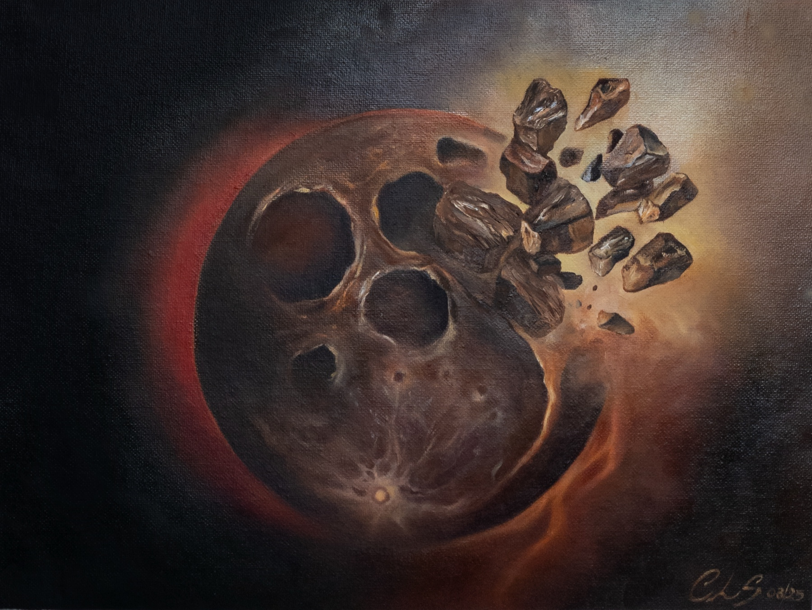

Portfolio
Browse by focus: Space Art, Abstract Realism, and Landscapes. Titles and indicative prices are shown below each work.
Space Art

Above - The moon series
Oil on canvas
SOLD

The Witch Nebula
Oil on canvas board
SOLD

Fractured Orbit - The moon series
Oil on canvas sheet
37×27cm
£250
Abstract Realism

The Gravity of Simple Things
Oil on canvas
30x40cm
£450

A Quiet Becoming
Oil on canvas
50x75cm
£800

Motherhood
Oil on canvas
120x80cm
£1350
Landscapes

Somewhere, far from here.
Oil on panel
SOLD

Untitled I
Oil on canvas board
SOLD

Untitled II
Oil on canvas board
SOLD